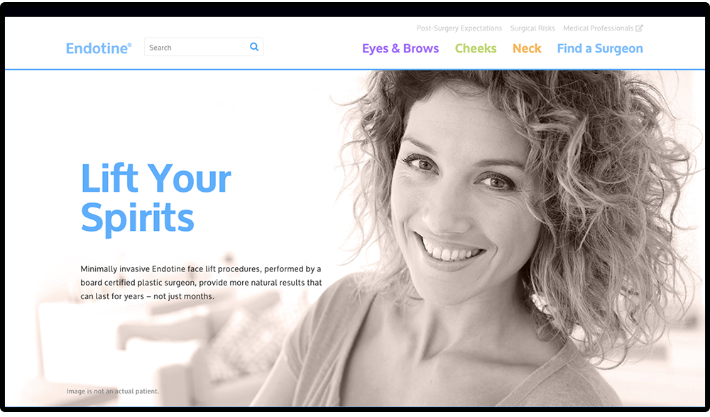

Endotine Patient Website

Challenges
Improve the online resource to better inform new patients (within the US) by:
- providing access to surgeons who currently practice the procedures to patients
- reaching a larger audience with increased advertising and improved usability for mobile devices
Client
Endotine® by MicroAire Surgical Instruments
Team
- Sarah Beth Martin: Design, Development
- Elias Jones: Creative Services Lead
Client's Profile:
Endotine devices are small, bioabsorbable implants used in face lift procedures.

Go and experience the site for yourself.
Visit Site ⇨Redesigning for Patients
Endotinepatient.com is an online resource for patients interested in learning more about Endotine facial procedures.
This online resource was typically found by patients in a few different ways:
- Recommendation from a surgeon to a patient considering the procedure(s)
- From patient literature found within plastic surgery centers/waiting areas
- Organically through search results (although this was a very low quantity)
The primary goal is to inform new patients of the procedures (organically or through advertising) and refer them to a nearby surgeon.
Previous Website
Landing Page

Brow Lift Page

Transbleph Page

Midface Page

Ribbon Page

Find a Surgeon Page

The previous patient website was static, not mobile-friendly, had minimal advertising, and remained stagnant for about eight years. The large paragraphs and crammed content were difficult to digest and were oftentimes duplicated. Updates to bring this patient resource to today's standards was long overdue.
“Simplicity is the ultimate sophistication.”
Leonardo da Vinci
Simplify, Simplify, Simplify
Unncessary content was removed and verbiage (including some medical jargon) was analyzed for better comprehension. Three new procedure sections were created: Eyes & Brows (previously Endoscopic Brow Lift and Direct Brow Lift), Cheeks (previously Endoscopic Midface Lift), and Neck (previously Ribbon Lift). Thus, labeling the different types of procedures in a way that can be easily understood by patients.
Color Palette
Soft, triadic colors deliniate between each procedure for easier navigation. A soft sky blue is used primarily on main headings and links to stand out against the white and light peach tones.
This palette conveys a gentle, spa-like experience—an experience that many plastic surgeons convey in their own branding. Due to the seriousness of surgery, a soft color scheme is more calming for patients who are considering elective surgery. These palettes bring an amicable (and oftentimes sophisticated) impression to plastic surgery.
#794dff
#a3c639
#ff9933
#fdefe8
#f8c7ad
#4da6ff
Typography
Oxygen is used for bold headings and easy-to-read paragraph text. The sans-serif is specifically made for legibility on modern screens. It has the clean lines and legibility like a neo-grotesque typeface, but also evokes some warmth and personality of a humanist typeface (seen in the gentle curves of terminals in the 't' and 'l').
Moderately large text size and high contrast is crucial for easy reading, particularly since the target audience ranges between 45-65 years.
Oxygen
Large & Bold Headings
Paragraph Text Apparently we had reached a great height in the atmosphere, for the sky was a dead black, and the stars had ceased to twinkle. By the same illusion which lifts the horizon of the sea to the level of the spectator on a hillside, the sable cloud beneath was dished out, and the car seemed to float in the middle of an immense dark sphere, whose upper half was strewn with silver.
Responsive for Mobile
Not only is a responsive website important, it's crucial if you want to be found by users using smaller devices, which turns out to be more than 75% of patients that are now able to access the site.


Subtle animations draw interest and invite interaction to content.


Post-Launch Results
Results are based off the first thirty days since launching. Previous numbers before the launch were considerably low (or non-exsistent).
Surgeon request form submissions.
Mobile device usage.
Unique website visitors.
The main call-to-action is a form submission that requests a list of surgeons in a patient's area. Combined with targeted online advertising, an average of 65 forms are submitted monthly.